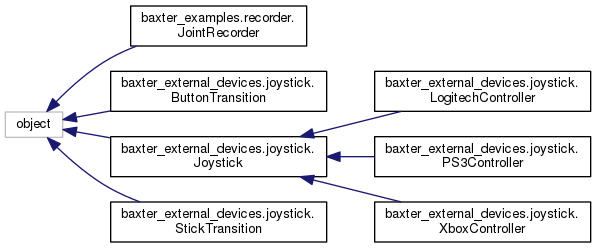

Main Page
Namespaces
Classes
Files
Class List
Class Hierarchy
Class Members
Class Hierarchy
Go to the textual class hierarchy

baxter_control_sofar
Author(s): Lastrico Riccardo
autogenerated on Fri Sep 24 2021 19:18:08